01. The brief
The brief behind the brief.
The CEO wanted the app to look modern. Underneath that, Nami's product team was about to add real depth to the derivatives experience. The visual refresh was the surface layer.
Coming onto the futures surfaces
- Cross Futures
- Partial close
- DCA
- Funding Rate
- Portfolio statistics
- Trading Rules
- Fee discount tokens
How might the futures surfaces absorb a maturing product without breaking the muscle memory of traders already using it?
I didn't frame the work this way at the time. I took the brief and went straight to the canvas. Today, I would walk back from the brief to the product roadmap first.
02. Research
Mature exchanges solve density with hierarchy.
I studied six exchanges side by side. Four patterns held across all of them.
#Competitor teardown
- Binance
- OKX
- Bybit
- MEXC
- KuCoin
- BingX
01.
Density was solved by hierarchy, not minimalism.
They didn't reduce the data. They encoded a hierarchy so the eye knew where to land.
02.
Color carried meaning that never broke.
Green and red for direction, yellow for warning, neutral grays for resting state. Same hue, same meaning, every surface.
03.
Position cards led with PnL and exit prices.
Live, decision-driving information at the top; reference data below.
04.
Order history was a record of decisions, not data.
Closed orders looked different by reason. A take profit close didn't look like a liquidation.
03. The before
Reading the before with hindsight.
Three things were breaking down. I can name them now, even though I couldn't put all of it into words as a junior.
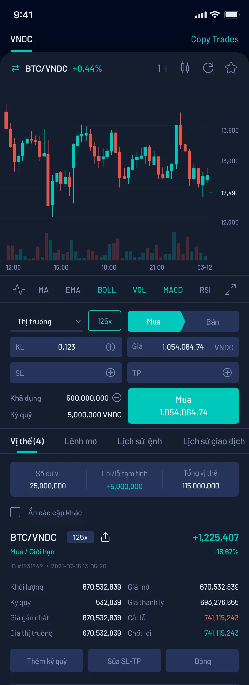
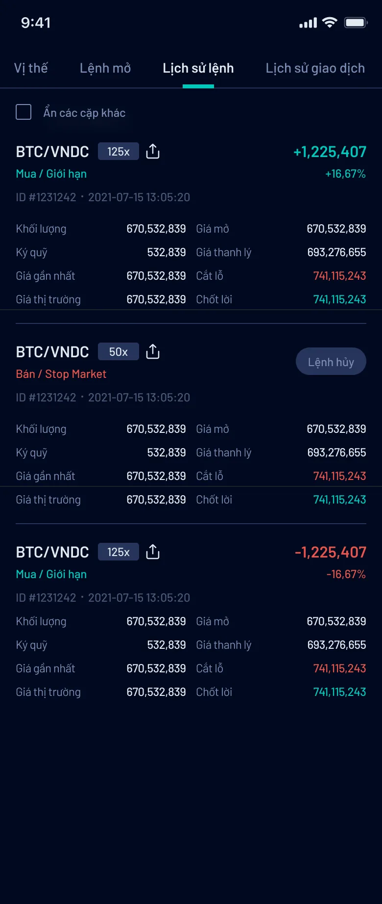
-
Every stat looked equally important
Eight data points in a flat grid. Scanning a list of positions meant eight reads per card.
-
Every closed order looked the same
A take profit, a liquidation and a DCA event were identical rows. The list stored trades; it didn't help traders learn from them.
-
No room for what was coming
Funding Rate and Trading Rules had no home. The page sat as a tab under “VNDC” with no Futures identity.
04. Design
Three themes behind the craft work.
Each theme answers one of the breakdowns: what traders watch, what happened to a trade, and where new concepts like Funding Rate live.
1. Elevate what traders watch. Demote what they reference. Let them pick density.
On the new position card, PnL became the largest element, color-coded at a size that reads instantly. Stop loss and take profit moved out of the stats grid into their own highlighted block, with both price and percentage from entry. The other six stats compressed into a smaller three-column grid below.
- WatchPnL, largest and color-coded
- ExitStop loss & take profit: price and % from entry
- ReferenceSix remaining stats in a compact 3-column grid
The list also gained a density toggle: a global Đầy đủ (Full) and Rút gọn (Compact), with per-card chevrons inside Đầy đủ. The default lands on the lighter mode.
🔁 Before and after
The same Positions tab, before and after. The old card gave all eight stats the same weight. The new one leads with PnL and the exit prices, then compresses the rest into a reference grid.


What changed on the card:
PnL and the exit prices now lead; the other six stats became reference.
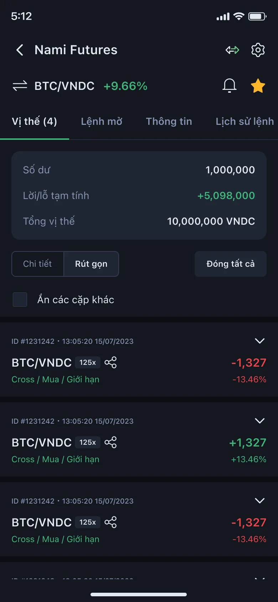
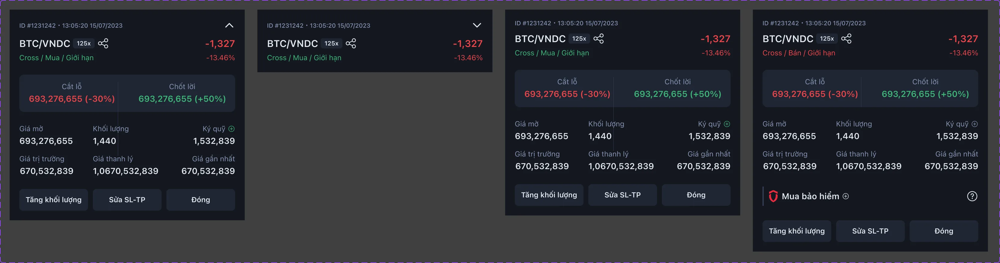
PrincipleTraders care about how they're doing now and where they're getting out. Everything else is reference. Reorder by attention, and let traders choose density.
2. One detail screen, every lifecycle.
A futures order has a life. It can be modified through DCA, SL/TP edits, margin adjustments or partial close. It ends by manual exit, take profit, stop loss or liquidation, and each ending means something different.
The old screen showed the same flat data however the order resolved. The new detail tells the order's story: a Nguyên nhân (Cause) field names how it ended, and the layout shifts to emphasize what matters for that ending.
- Take profit
- Highlights Chốt lời, with PnL in green.
- Stop loss
- Highlights Cắt lỗ, in red.
- Liquidation
- Surfaces the liquidation fee.
- Partial close
- Separates closed volume from what remains.
- DCA
- Shows volume and average price changes inline.
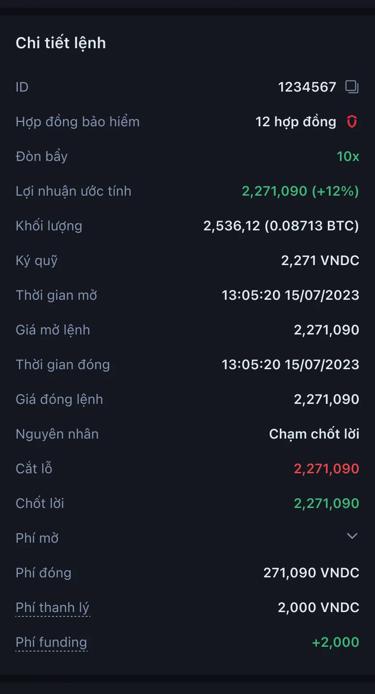
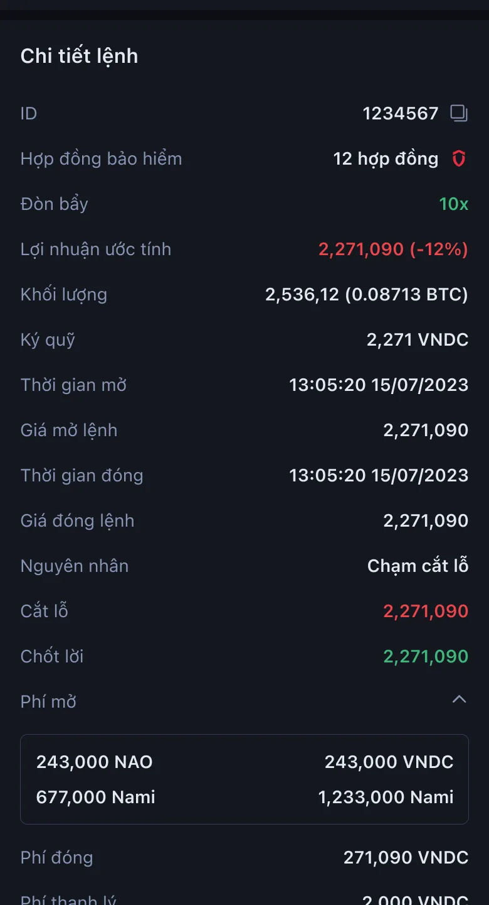
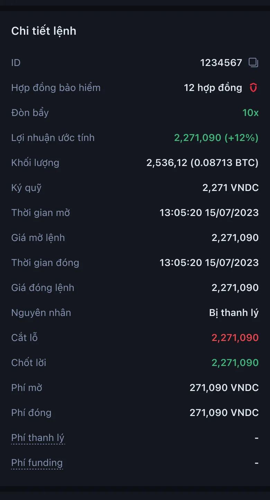
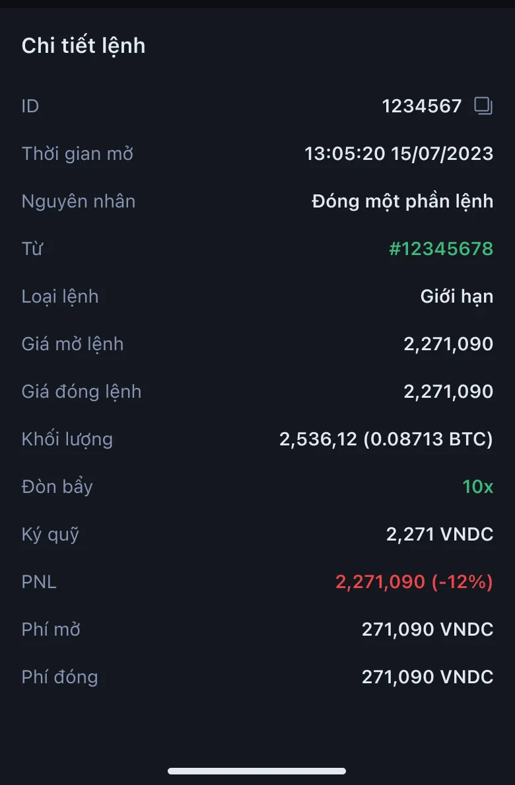
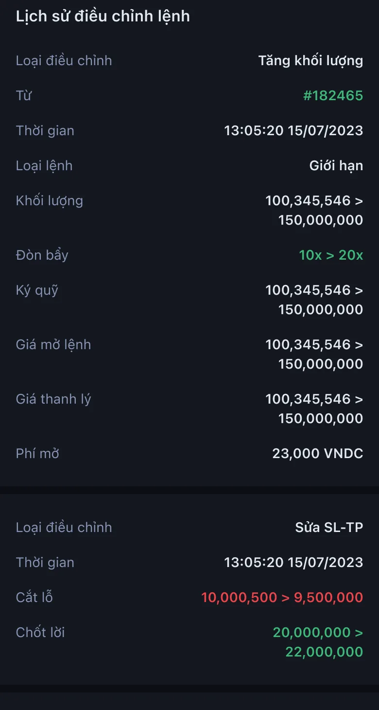
Modification history
Every modified order also carries a Lịch sử điều chỉnh lệnh section. Each change is a before-and-after row, color-coded, so a trader can replay what they did to the position: a DCA that raised volume and moved the average price, then an SL/TP edit.
PrincipleThe detail screen should answer the question a trader has when they open a closed order: what happened to this trade, and what did I do about it?
3. Make room for Funding Rate without crowding the order form.
Funding Rate was new to most Nami traders. The math, a small charge or credit every eight hours based on the gap between futures and spot price, is something traders learn by seeing it work. So the design is layered.
01.
A persistent row
A thin row below the chart's indicator selectors shows the current rate and a countdown to the next funding moment. Visibility teaches awareness.
02.
A plain-language modal
One tap opens an explanation written for traders, not for the spec. The modal teaches understanding.
03.
History and rules
The modal links to Lịch sử funding, and the Thông tin tab lists Funding beside the contract's other trading rules. The history closes the loop.
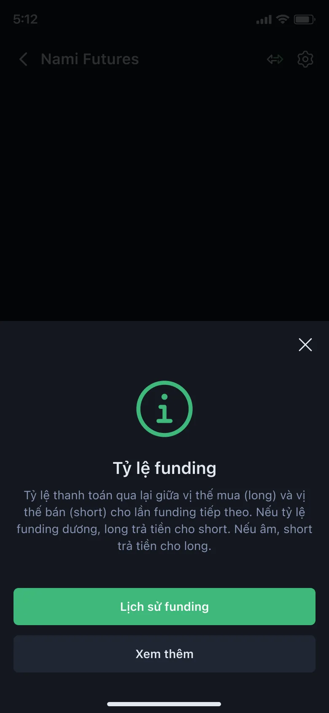
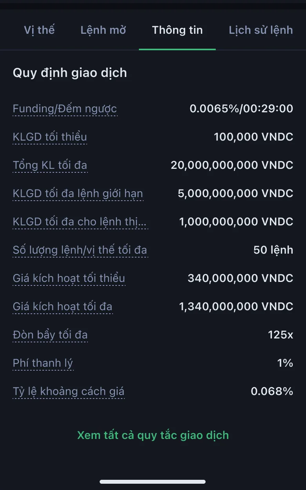
05. Reflection
What I'd do differently.
-
Reframe the brief
“The app looks outdated” was a trigger, not a problem. Today I'd ask which surfaces are being changed by which features, and let that shape what gets redesigned.
-
Add real user research
Competitor analysis isn't user research. I'd talk to Nami traders, mine support tickets and instrument the funnel before touching a screen.
-
Commit to a metric
I shipped with no baseline and no target. Today I'd pick one, such as time-to-first-trade, order-entry completion or position management session length, and check it after.
This project taught me how to design for a product that is maturing underneath the surface I'm working on. What I'd add today is designing for outcomes, not just outputs.